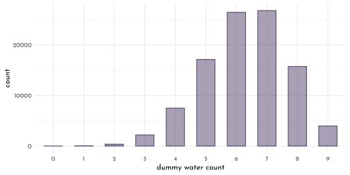
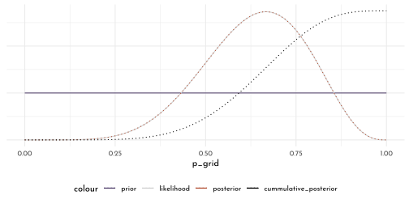
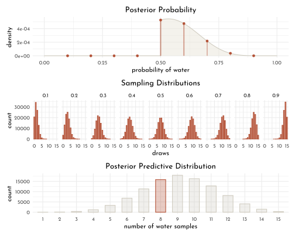
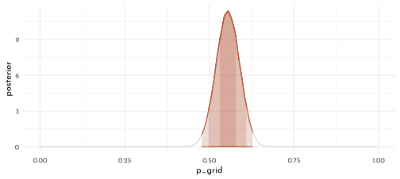

4 Rethinking: Chapter 3
Sampling the Imaginary
by Richard McElreath, building on the Summary by Solomon Kurz
\[ Pr(vampire|positive) = \frac{Pr(positive|vampire) \times Pr(vampire)}{Pr(positive)} \]
pr_positive_on_vamp <- .95
pr_positive_on_mort <- .01
pr_vamp <- .001
pr_positive <- pr_positive_on_vamp * pr_vamp + pr_positive_on_mort * (1 - pr_vamp)
(pr_vamp_on_positive <- pr_positive_on_vamp * pr_vamp /pr_positive)#> [1] 0.086837294.1 Sampling from a grid approximate posterior
posterior here means simply ‘the probability of p conditional on the data’:
grid_approx <- function(n_grid = 20, L = 6, W = 3, prior = function(x){rep(1, length(x))}){
tibble(p_grid = seq(0, 1, length.out = n_grid),
prior = prior(p_grid),
likelihood = dbinom(L, size = W + L, prob = p_grid),
posterior_unstand = likelihood * prior,
posterior = posterior_unstand / sum(posterior_unstand))
}
grid_data <- grid_approx(n_grid = 10^4)
samples <- tibble(sample = 1:(10^4),
proportion_water = sample(x = grid_data$p_grid, size = length(sample),
prob = grid_data$posterior, replace = TRUE))
p_scatter <- samples %>%
ggplot(aes(x = sample, y = proportion_water)) +
geom_point(size = .75, shape = 21, color = clr_alpha(clr2,.3), fill = clr_alpha(clr2,.1)) +
scale_x_continuous(expand = c(0,0))
p_dens <- samples %>%
ggplot(aes(x = proportion_water)) +
geom_density( color = clr2, fill = fll2) +
scale_x_continuous(limits = c(0,1), expand = c(0, 0))
p_scatter + p_dens
4.2 Sampling to Summarize
Once the posterior distribution is created, the model is done.
Typical targets / questions:
- intervals of defined boundaries
- intervals of defined probability mass
- point estimates
4.2.1 Intervals of devined boundaries
sum(grid_data$posterior[grid_data$p_grid < 0.5])#> [1] 0.171875sum(samples$proportion_water < .5) / length(samples$proportion_water)#> [1] 0.1772sum(samples$proportion_water > .5 & samples$proportion_water < .75) / length(samples$proportion_water)#> [1] 0.5989# f_post <- function(x){dbeta(x = x, shape1 = 9 +1 , shape2 = 6 +1)}
f_post <- function(x){dbinom(x = 6, size = 9, prob = x)}
f_post_norm <- function(x){ f_post(x) / integrate(f = f_post,lower = 0, upper = 1)[[1]]}plot_intervals <- function(x_bounds = c(0, 1),
x_line = as.numeric(NA),
f_posterior = f_post_norm,
data = samples,
ylim = c(0, 3)){
p_d <- ggplot() +
stat_function(fun = f_posterior, xlim = c(0,1),
geom = "area", color = clr0, fill = fll0) +
stat_function(fun = f_posterior, xlim = x_bounds,
geom = "area", color = clr2, fill = fll2) +
labs(y = "density", x = "proportion_water")
p_d_emp <- data %>%
ggplot(aes(x = proportion_water)) +
geom_density( color = clr0, fill = fll0) +
stat_function(fun = function(x){demp(obs = data$proportion_water, x = x)},
xlim = x_bounds,
geom = "area", color = clr2, fill = fll2) +
labs(y = "empirical density")
p_d + p_d_emp &
geom_vline(data = tibble(x = x_line),
aes(xintercept = x), linetype = 3) &
scale_y_continuous(limits = ylim)&
scale_x_continuous(limits = c(0, 1))
}plot_intervals(x_bounds = c(0, .5), x_line = .5) /
plot_intervals(x_bounds = c(.5, .75), x_line = c(.5, .75))
4.2.2 Intervals of defined mass
aka.:
- compatibility interval
- credible interval
- percentile interval
special form: highest posterior density interval (HPDI)
qnt_80 <- quantile(samples$proportion_water, probs = .8)
qnt_80_inner <- quantile(samples$proportion_water, probs = c(.1, .9))
plot_intervals(x_bounds = c(0, qnt_80), x_line = qnt_80)/
plot_intervals(x_bounds = qnt_80_inner, x_line = qnt_80_inner)
library(rethinking)
map <- purrr::map
grid_data_skew <- grid_approx(L = 3, W = 0, n_grid = 10^4)
samples_skew <- tibble(sample = 1:(10^4),
proportion_water = sample(x = grid_data_skew$p_grid, size = length(sample),
prob = grid_data_skew$posterior, replace = TRUE))
f_post_skew <- function(x){dbinom(x = 3, size = 3, prob = x)}
f_post_norm_skew <- function(x){ f_post_skew(x) / integrate(f = f_post_skew, lower = 0, upper = 1)[[1]]}
qnt_50_inner <- PI(samples_skew$proportion_water, prob = .5)
qnt_50_high_dens <- HPDI(samples_skew$proportion_water, prob = .5)
plot_intervals(x_bounds = qnt_50_inner, x_line = qnt_50_inner,
f_posterior = f_post_norm_skew, data = samples_skew, ylim = c(0, 4)) /
plot_intervals(x_bounds = qnt_50_high_dens, x_line = qnt_50_high_dens,
f_posterior = f_post_norm_skew, data = samples_skew, ylim = c(0, 4)) 
4.3 Point estimates
point_estimates <- tibble(proportion_water= list(mean, median, chainmode) %>%
map_dbl(.f = function(f, vals){ f(vals) },
vals = samples_skew$proportion_water),
statistic = c("mean", "median", "mode"))
p_point_estimates <- ggplot() +
stat_function(fun = f_post_norm_skew, xlim = c(0,1),
geom = "area", color = clr0, fill = fll0) +
geom_vline(data = point_estimates,
aes(xintercept = proportion_water, linetype = statistic),
color = clr1) +
labs(y = "density")
f_loss <- function(x){
map_dbl(x, function(x){ sum( grid_data_skew$posterior * abs( x - grid_data_skew$p_grid))
})}
f_loss_quad <- function(x){
map_dbl(x, function(x){ sum( grid_data_skew$posterior * ( x - grid_data_skew$p_grid) ^ 2)
})}
p_loss <- ggplot() +
stat_function(fun = f_loss,
xlim = c(0,1),
geom = "area", color = clr0, fill = fll0) +
geom_point(data = tibble(x = point_estimates$proportion_water[2],
y = f_loss(point_estimates$proportion_water[2])),
aes(x = x, y = y), shape = 1, size = 3, color = clr1) +
labs(x = "poportion_water", y = "expected proportional loss")
p_loss_quad <- ggplot() +
stat_function(fun = f_loss_quad,
xlim = c(0,1),
geom = "area", color = clr0, fill = fll0) +
geom_point(data = tibble(x = point_estimates$proportion_water[2],
y = f_loss_quad(point_estimates$proportion_water[2])),
aes(x = x, y = y), shape = 1, size = 3, color = clr1) +
labs(x = "poportion_water", y = "expected proportional loss")
p_point_estimates + p_loss + p_loss_quad +
plot_layout(guide = "collect") & theme(legend.position = "bottom")
4.4 sample to simulate prediction
binomial likelihood
\[ Pr(W | N ,p) = \frac{N!}{W! (N -W)!} p^{W}(1 - p)^{N-W} \]
dbinom( 0:2, size = 2, prob = .7)#> [1] 0.09 0.42 0.49rbinom( 10, size = 2, prob = .7)#> [1] 0 1 2 1 2 2 1 2 2 2create_dummy_w <- function(size, prob){
tibble(x = rbinom(10^5, size = size, prob = prob),
size = size,
prob = prob)
}
dummy_w <- create_dummy_w(size = 9, prob = .7)
dummy_w %>%
group_by(x) %>%
count() %>%
ungroup() %>%
ggplot(aes(x = factor(x), y = n)) +
geom_bar(stat = "identity", color = clr1, fill = fll1, width = .6) +
labs(y = "count", x = "dummy water count")
tibble(size = rep(c(3,6,9), each = 3),
prob = rep(c(.3,.6,.9), 3)) %>%
pmap_dfr(create_dummy_w) %>%
group_by(x, size , prob) %>%
count() %>%
ungroup() %>%
ggplot(aes(x = factor(x), y = n)) +
geom_bar(stat = "identity", color = clr1, fill = fll1, width = .6) +
facet_grid(prob ~ size, scales = "free",
space = "free_x", labeller = label_both) +
labs(y = "count", x = "dummy water count") +
theme(panel.background = element_rect(color = clr0d, fill = clr_alpha(clr0d,.2)))
grid_data <- grid_approx(n_grid = 10^4 + 1, L = 6, W = 3,
prior = function(x){rep(1, length(x))}) %>%
mutate(idx = 1:(10^4 + 1))
grid_data %>%
ggplot(aes(x = p_grid))+
geom_line(aes(y = posterior, color = "posterior")) +
scale_color_manual(values = c(posterior = clr1), guide = "none") +
theme(legend.position = "bottom")
samples <- grid_data %>%
slice_sample(n = 10^5 , weight_by = posterior, replace = TRUE) %>%
mutate(w = purrr::map_dbl(p_grid, rbinom, n = 1, size = 9),
seq = map(w, .f = function(x){sample(x = rep(c("W","L"), c(x, 9-x)),
size = 9,
replace = FALSE)}),
max_run_length = map_dbl(seq,.f = function(x){rle(x)$lengths %>% max()}),
n_switches = map_dbl(seq,.f = function(x){(rle(x)$lengths %>% length()) -1}))
p_posterior <- grid_data %>%
ggplot(aes(x = p_grid, y = posterior)) +
geom_area(color = clr0d, fill = fll0) +
geom_segment(data = grid_data %>% filter(idx %in% (1+ (1:9)*1000)),
aes(xend = p_grid,
yend = 0, size = posterior),
color = fll1) +
geom_point(data = grid_data %>% filter(idx %in% (1+ (1:9)*1000)),
color = clr1) +
scale_size_continuous(range = c(.1, 1), guide = "none") +
labs(x = "probability of water", y = "density", title = "Posterior Probability")
simulate_binom <- function(probability, n_draws = 10^5, size = 9) {
rbinom(n_draws, size = size, prob = probability)
}
d_small <- tibble(probability = seq(from = .1, to = .9, by = .1)) %>%
mutate(draws = purrr::map(probability, simulate_binom)) %>%
unnest(draws)
p_small <- d_small %>%
ggplot(aes(x = draws)) +
geom_bar(stat = "count", color = clr1, fill = fll1, width = .6) +
facet_wrap(probability ~ ., nrow = 1)+
labs(title = "Sampling Distributions")
p_posterior_predictive <- samples %>%
ggplot(aes(x = factor(w))) +
geom_bar(stat = "count",
aes(color = w == 6 ,
fill = after_scale(clr_alpha(color, .3))),
width = .6) +
scale_color_manual(values = c(`TRUE` = clr1, `FALSE` = clr0d), guide = "none") +
labs(x = "number of water samples", title = "Posterior Predictive Distribution")p_posterior /
p_small /
p_posterior_predictive
sum( samples$w == 6 ) / length( samples$w )#> [1] 0.19842globe_data <- c("w", "l", "w", "w", "w", "l", "w", "l", "w")
globe_run_length <- rle(globe_data)$lengths %>% max()
globe_n_switches <- (rle(globe_data)$lengths %>% length()) -1
p_run_length <- samples %>%
ggplot(aes(x = factor(max_run_length))) +
geom_bar(stat = "count", aes(color = max_run_length == globe_run_length,
fill = after_scale(clr_alpha(color))), width = .6) +
scale_color_manual(values = c(`TRUE` = clr2, `FALSE` = clr0d), guide = "none") +
labs(x = "longest run length")
p_switches <- samples %>%
ggplot(aes(x = factor(n_switches))) +
geom_bar(stat = "count", aes(color = n_switches == globe_n_switches,
fill = after_scale(clr_alpha(color))), width = .6) +
scale_color_manual(values = c(`TRUE` = clr2, `FALSE` = clr0d), guide = "none") +
labs(x = "number of switches")
p_run_length + p_switches
4.5 Homework
n <- 10^4
set.seed( 100 )
easy_data <- tibble(p_grid = seq( from = 0, to = 1, length.out = n ),
prior = rep(1 , n),
likelihood = dbinom( 6, size = 9, prob = p_grid),
posterior_unscaled = likelihood * prior,
posterior = posterior_unscaled / sum(posterior_unscaled),
samples = sample( p_grid, prob = posterior, size = n, replace = TRUE),
cummulative_posterior = cumsum(posterior))easy_data %>%
ggplot(aes(x = p_grid)) +
geom_line(aes(y = prior / sum(prior), color = "prior")) +
geom_line(aes(y = likelihood / sum(likelihood),
color = "likelihood")) +
geom_line(aes(y = posterior, color = "posterior"), linetype = 3) +
geom_line(aes(y = cummulative_posterior / sum(cummulative_posterior),
color = "cummulative_posterior"), linetype = 3) +
scale_color_manual(values = c(prior = clr1, likelihood = clr0d,
posterior = clr2, cummulative_posterior = "black")) +
theme(axis.title.y = element_blank(),
axis.text.y = element_blank(),
legend.position = "bottom")
E1
sum( easy_data$posterior[easy_data$p_grid < .2] )#> [1] 0.0008635326E2
sum( easy_data$posterior[easy_data$p_grid > .8] )#> [1] 0.120821E3
sum( easy_data$posterior[easy_data$p_grid > .2 & easy_data$p_grid < .8] )#> [1] 0.8783154E4
quantile(easy_data$samples, probs = .2)#> 20%
#> 0.5145315max( easy_data$p_grid[easy_data$cummulative_posterior <= .2] )#> [1] 0.5162516E5
quantile(easy_data$samples, probs = .8)#> 80%
#> 0.7618962min( easy_data$p_grid[easy_data$cummulative_posterior >= .8] )#> [1] 0.7605761E6
HPDI(easy_data$samples, prob = .66)#> |0.66 0.66|
#> 0.5138514 0.7886789p_e6 <- easy_data %>%
ggplot(aes(x = p_grid)) +
geom_line(aes(y = posterior, color = "posterior")) +
geom_vline(data = tibble(x = HPDI(easy_data$samples, prob = .66)),
aes(xintercept = x), linetype = 3) +
scale_color_manual(values = c(posterior = clr2), guide = "none") +
theme(axis.title.y = element_blank(),
axis.text.y = element_blank(),
legend.position = "bottom")E7
PI(easy_data$samples, prob = .66)#> 17% 83%
#> 0.4972327 0.7745775p_e7 <- easy_data %>%
ggplot(aes(x = p_grid)) +
geom_line(aes(y = posterior, color = "posterior")) +
geom_vline(data = tibble(x = PI(easy_data$samples, prob = .66)),
aes(xintercept = x), linetype = 3) +
scale_color_manual(values = c(posterior = clr2), guide = "none") +
theme(axis.title.y = element_blank(),
axis.text.y = element_blank(),
legend.position = "bottom")
p_e6 + p_e7
M1
grid_data <- grid_approx(n_grid = 10^4 + 1, L = 8, W = 7,
prior = function(x){rep(1, length(x))}) %>%
mutate(idx = 1:(10^4 + 1))
grid_data %>%
ggplot(aes(x = p_grid))+
geom_line(aes(y = posterior, color = "posterior")) +
scale_color_manual(values = c(posterior = clr2), guide = "none") +
theme(legend.position = "bottom")
M2
samples <- grid_data %>%
slice_sample(n = 10^5 , weight_by = posterior, replace = TRUE) %>%
mutate(w = purrr::map_dbl(p_grid, rbinom, n = 1, size = 15))
HPDI(samples$p_grid, prob = .9)#> |0.9 0.9|
#> 0.3329 0.7218M3
p_posterior <- grid_data %>%
ggplot(aes(x = p_grid, y = posterior)) +
geom_area(color = clr0d, fill = fll0) +
geom_segment(data = grid_data %>% filter(idx %in% (1+ (1:9)*1000)),
aes(xend = p_grid,
yend = 0, size = posterior),
color = fll2) +
geom_point(data = grid_data %>% filter(idx %in% (1+ (1:9)*1000)),
color = clr2) +
scale_size_continuous(range = c(.1, 1), guide = "none") +
labs(x = "probability of water", y = "density", title = "Posterior Probability")
d_small <- tibble(probability = seq(from = .1, to = .9, by = .1)) %>%
mutate(draws = purrr::map(probability, simulate_binom, size = 15)) %>%
unnest(draws)
p_small <- d_small %>%
ggplot(aes(x = draws)) +
geom_bar(stat = "count", color = clr2, fill = fll2, width = .6) +
facet_wrap(probability ~ ., nrow = 1)+
labs(title = "Sampling Distributions")
p_posterior_predictive <- samples %>%
ggplot(aes(x = factor(w))) +
geom_bar(stat = "count",
aes(color = w == 8 ,
fill = after_scale(clr_alpha(color, .3))),
width = .6) +
scale_color_manual(values = c(`TRUE` = clr2, `FALSE` = clr0d), guide = "none") +
labs(x = "number of water samples", title = "Posterior Predictive Distribution")p_posterior /
p_small /
p_posterior_predictive
sum( samples$w == 8 ) / length( samples$w )#> [1] 0.14738M4
samples <- grid_data %>%
slice_sample(n = 10^5 , weight_by = posterior, replace = TRUE) %>%
mutate(w = purrr::map_dbl(p_grid, rbinom, n = 1, size = 9))
samples %>%
ggplot(aes(x = factor(w))) +
geom_bar(stat = "count",
aes(color = w == 6 ,
fill = after_scale(clr_alpha(color, .3))),
width = .6) +
scale_color_manual(values = c(`TRUE` = clr2, `FALSE` = clr0d), guide = "none") +
labs(x = "number of water samples", title = "Posterior Predictive Distribution")
sum( samples$w == 6 ) / length( samples$w )#> [1] 0.17634M5
grid_data <- grid_approx(n_grid = 10^4 + 1, L = 8, W = 7,
prior = function(x){if_else(x < .5, 0, 1)}) %>%
mutate(idx = 1:(10^4 + 1))samples <- grid_data %>%
slice_sample(n = 10^5 , weight_by = posterior, replace = TRUE) %>%
mutate(w = purrr::map_dbl(p_grid, rbinom, n = 1, size = 15))
HPDI(samples$p_grid, prob = .9)#> |0.9 0.9|
#> 0.5000 0.7117p_posterior <- grid_data %>%
ggplot(aes(x = p_grid, y = posterior)) +
geom_area(color = clr0d, fill = fll0) +
geom_segment(data = grid_data %>% filter(idx %in% (1+ (1:9)*1000)),
aes(xend = p_grid,
yend = 0, size = posterior),
color = fll2) +
geom_point(data = grid_data %>% filter(idx %in% (1+ (1:9)*1000)),
color = clr2) +
scale_size_continuous(range = c(.1, 1), guide = "none") +
labs(x = "probability of water", y = "density", title = "Posterior Probability")
d_small <- tibble(probability = seq(from = .1, to = .9, by = .1)) %>%
mutate(draws = purrr::map(probability, simulate_binom, size = 15)) %>%
unnest(draws)
p_small <- d_small %>%
ggplot(aes(x = draws)) +
geom_bar(stat = "count", color = clr2, fill = fll2, width = .6) +
facet_wrap(probability ~ ., nrow = 1)+
labs(title = "Sampling Distributions")
p_posterior_predictive <- samples %>%
ggplot(aes(x = factor(w))) +
geom_bar(stat = "count",
aes(color = w == 8 ,
fill = after_scale(clr_alpha(color, .3))),
width = .6) +
scale_color_manual(values = c(`TRUE` = clr2, `FALSE` = clr0d), guide = "none") +
labs(x = "number of water samples", title = "Posterior Predictive Distribution")p_posterior /
p_small /
p_posterior_predictive
sum( samples$w == 8 ) / length( samples$w )#> [1] 0.15846M6
random_tosses <- function(n, n_grid = 1e4, n_posterior_sample = 1e4,
prior = function(x){rep(1, length(x))}){
grid_data <- tibble(p_grid = seq(0, 1, length.out = n_grid),
prior = prior(p_grid),
likelihood = dbinom(rbinom(1, size = n, prob = .7),
size = n, prob = p_grid),
posterior_unstand = likelihood * prior,
posterior = posterior_unstand / sum(posterior_unstand))
samples <- grid_data %>%
slice_sample(n = n_posterior_sample, weight_by = posterior, replace = TRUE)
tibble(n = n,
grid_data = list(grid_data),
samples = list(samples),
hpdi = list(HPDI(samples[[1]]$p_grid, prob = .99)),
hpdi_width = diff(hpdi[[1]]))
}
c(c(1:10),((1:100) *30)) %>%
map_dfr(random_tosses) %>%
ggplot(aes(x = n, y = hpdi_width)) +
geom_point(aes(color = hpdi_width < .05)) +
geom_hline(yintercept = .05, color = "black", linetype = 3) +
scale_color_manual(values = c(`FALSE` = clr0d, `TRUE` = clr2),
guide = "none")
H1
library(rethinking)
data(homeworkch3)
n_grid <- 1e4 + 1
grid_data <- tibble(p_grid = seq(0, 1, length.out = n_grid),
prior = (function(x){rep(1, length(x))})(p_grid),
likelihood = dbinom(sum(birth1 + birth2),
size = length(c(birth1, birth2)),
prob = p_grid),
posterior_unstand = likelihood * prior,
posterior = posterior_unstand / sum(posterior_unstand))
samples <- grid_data %>%
slice_sample(n = 1e5,
weight_by = posterior, replace = TRUE)
(mode_posterior <- chainmode(samples$p_grid))#> [1] 0.5547754grid_data %>%
ggplot(aes(x = p_grid, y = posterior)) +
geom_area(color = clr0d, fill = fll0, size = .5) +
geom_vline(xintercept = mode_posterior, color = clr2, linetype = 3)
H2
(percentile_intervals <- tibble(boundary = c("lower", "upper"),
p50 = HPDI(samples$p_grid, prob = .5),
p89 = HPDI(samples$p_grid, prob = .89),
p97 = HPDI(samples$p_grid, prob = .97))) %>%
knitr::kable()| boundary | p50 | p89 | p97 |
|---|---|---|---|
| lower | 0.5306 | 0.4977 | 0.4775 |
| upper | 0.5778 | 0.6090 | 0.6274 |
grid_data %>%
ggplot(aes(x = p_grid, y = posterior)) +
stat_function(fun = function(x){demp(x = x, obs = samples$p_grid)},
geom = "line", color = clr0d, xlim = c(0,1), n = 501) +
stat_function(fun = function(x){demp(x = x, obs = samples$p_grid)},
geom = "area", color = clr2, fill = clr_alpha(fll2,.2),
xlim = percentile_intervals$p50, n = 501) +
stat_function(fun = function(x){demp(x = x, obs = samples$p_grid)},
geom = "area", color = clr2, fill = clr_alpha(fll2,.2),
xlim = percentile_intervals$p89, n = 501) +
stat_function(fun = function(x){demp(x = x, obs = samples$p_grid)},
geom = "area", color = clr2, fill = clr_alpha(fll2,.2),
xlim = percentile_intervals$p97, n = 501)
H3
random_births <- grid_data %>%
slice_sample(n = 1e4,
weight_by = posterior, replace = TRUE) %>%
mutate(births = map(p_grid, .f = function(x){rbinom(n = 200, size = 1, prob = x)}),
n_boys = map_dbl(births, sum),
n_girls = 200 - n_boys,
n_boys_firstborn = map_dbl(births, function(x){ sum(x[1:100]) }))
sum(random_births$n_boys < sum(birth1 + birth2)) / sum(birth1 + birth2)#> [1] 43.45946p_all <- random_births %>%
ggplot(aes(x = n_boys)) +
geom_density(color = clr0d, fill = fll0) +
geom_vline(xintercept = sum(birth1 + birth2),
color = clr2, linetype = 3) +
scale_x_continuous(limits = c(0, 200))
p_first <- random_births %>%
ggplot(aes(x = n_boys_firstborn)) +
geom_density(color = clr0d, fill = fll0) +
geom_vline(xintercept = sum(birth1),
color = clr2, linetype = 3) +
scale_x_continuous(limits = c(0, 100))
p_all + p_first
H5
births_first_girl <- tibble(birth1 = birth1,
birth2 = birth2) %>%
filter(birth1 == 0)
n_first_girl <- length(births_first_girl$birth2)
random_births <- grid_data %>%
slice_sample(n = 1e4,
weight_by = posterior, replace = TRUE) %>%
mutate(births = map(p_grid, .f = function(x){rbinom(n = n_first_girl, size = 1, prob = x)}),
n_boys = map_dbl(births, sum),
n_girls = n_first_girl - n_boys)
sum(random_births$n_boys < sum(births_first_girl$birth2)) / 1e4#> [1] 0.9991random_births %>%
ggplot(aes(x = n_boys)) +
geom_density(color = clr0d, fill = fll0) +
geom_vline(xintercept = sum(births_first_girl$birth2),
color = clr2, linetype = 3) +
scale_x_continuous(limits = c(0, n_first_girl),
expand = c(0, 0)) 
4.6 {brms} section
brms_c3_6in9 <- brm(data = list(w = 6),
family = binomial(link = "identity"),
w | trials(9) ~ 0 + Intercept,
# this is a flat prior
prior(beta(1, 1), class = b, lb = 0, ub = 1),
iter = 5000, warmup = 1000,
seed = 42,
file = "brms/brms_c3_6in9")
posterior_summary(brms_c3_6in9) %>%
round(digits = 3) %>%
knitr::kable()| Estimate | Est.Error | Q2.5 | Q97.5 | |
|---|---|---|---|---|
| b_Intercept | 0.637 | 0.140 | 0.346 | 0.879 |
| lp__ | -3.310 | 0.748 | -5.392 | -2.780 |
n_trials <- 9
samples_brms <- fitted(brms_c3_6in9,
summary = FALSE,
scale = "linear") %>%
as_tibble() %>%
set_names(nm = "p") %>%
mutate(w = rbinom(n(), size = n_trials, prob = p))
p_brms_posterior <- samples_brms %>%
ggplot(aes(x = p)) +
geom_density(color = clr1, fill = fll1) +
scale_x_continuous(limits = c(0, 1), expand = c(0, 0)) +
labs(y = "density", x = "proportion water",
title = "{brms} posterior probability (6 in 9)")
p_brms_posterior_predictive <- samples_brms %>%
ggplot(aes(x = factor(w))) +
geom_bar(stat = "count",
aes(color = w == 6 ,
fill = after_scale(clr_alpha(color, .3))),
width = .6) +
scale_color_manual(values = c(`TRUE` = clr1, `FALSE` = clr0d), guide = "none") +
labs(y = "count", x = "number of water samples",
title = "posterior predictive distribution")
p_brms_posterior + p_brms_posterior_predictive
×